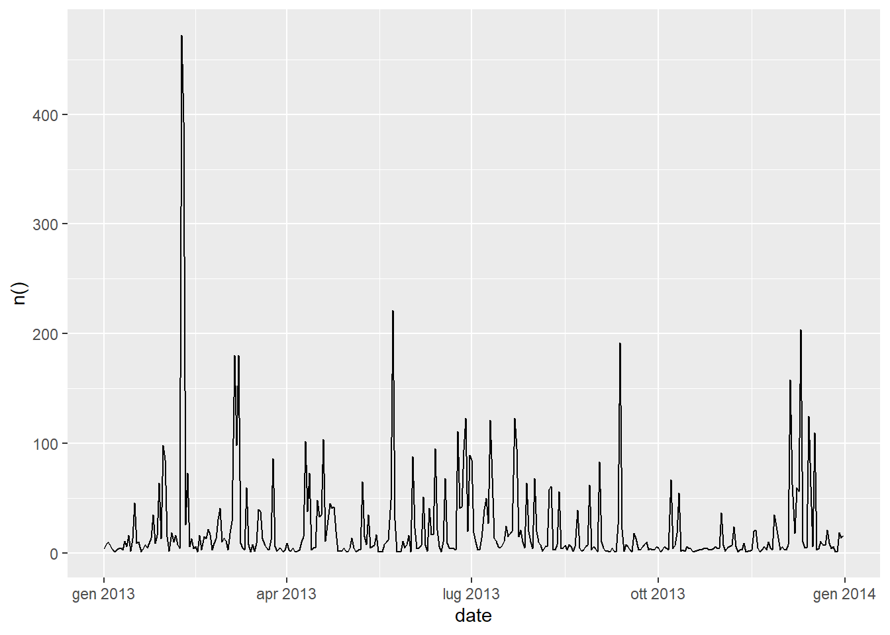
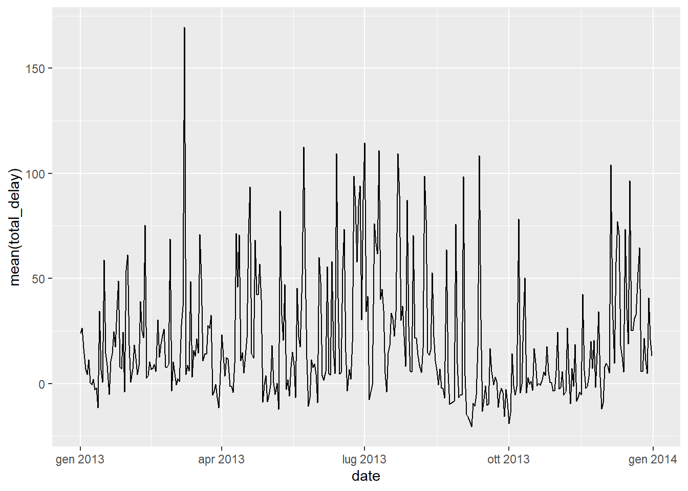
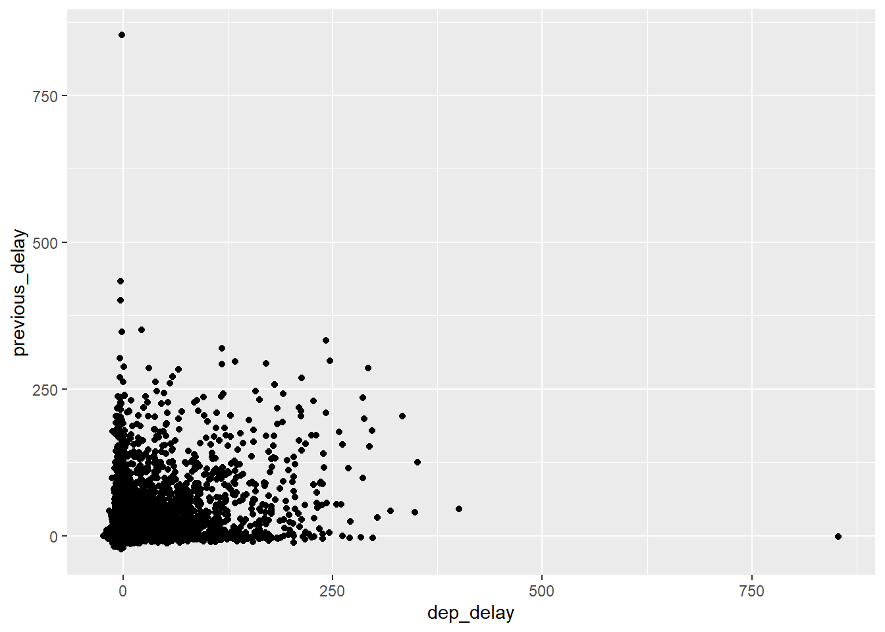

Chapter 5. Data transformation
R4DS github reference: r4ds/transform.Rmd
5.2 Filter rows with filter()
As a prerequisite install the tidyverse and nycflights13 packages.
if (!require("tidyverse")) install.packages("tidyverse")
library(tidyverse)
if (!require("nycflights13")) install.packages("nycflights13")
library(nycflights13)
Question 1: Find all flights that:
1) Had an arrival delay of two or more hours
2) Flew to Houston (IAH or HOU)
3) Were operated by United, American, or Delta
4) Departed in summer (July, August, and September)
5) Arrived more than two hours late, but didn’t leave late
6) Were delayed by at least an hour, but made up over 30 minutes in flight
7) Departed between midnight and 6am (inclusive)
Part 1) Pay attention to the fact that arr_delay is measured in minutes.
## # A tibble: 10,200 x 19
## year month day dep_time sched_dep_time dep_delay arr_time
## <int> <int> <int> <int> <int> <dbl> <int>
## 1 2013 1 1 811 630 101 1047
## 2 2013 1 1 848 1835 853 1001
## 3 2013 1 1 957 733 144 1056
## 4 2013 1 1 1114 900 134 1447
## 5 2013 1 1 1505 1310 115 1638
## 6 2013 1 1 1525 1340 105 1831
## 7 2013 1 1 1549 1445 64 1912
## 8 2013 1 1 1558 1359 119 1718
## 9 2013 1 1 1732 1630 62 2028
## 10 2013 1 1 1803 1620 103 2008
## # ... with 10,190 more rows, and 12 more variables: sched_arr_time <int>,
## # arr_delay <dbl>, carrier <chr>, flight <int>, tailnum <chr>,
## # origin <chr>, dest <chr>, air_time <dbl>, distance <dbl>, hour <dbl>,
## # minute <dbl>, time_hour <dttm>Part 2)
## # A tibble: 9,313 x 19
## year month day dep_time sched_dep_time dep_delay arr_time
## <int> <int> <int> <int> <int> <dbl> <int>
## 1 2013 1 1 517 515 2 830
## 2 2013 1 1 533 529 4 850
## 3 2013 1 1 623 627 -4 933
## 4 2013 1 1 728 732 -4 1041
## 5 2013 1 1 739 739 0 1104
## 6 2013 1 1 908 908 0 1228
## 7 2013 1 1 1028 1026 2 1350
## 8 2013 1 1 1044 1045 -1 1352
## 9 2013 1 1 1114 900 134 1447
## 10 2013 1 1 1205 1200 5 1503
## # ... with 9,303 more rows, and 12 more variables: sched_arr_time <int>,
## # arr_delay <dbl>, carrier <chr>, flight <int>, tailnum <chr>,
## # origin <chr>, dest <chr>, air_time <dbl>, distance <dbl>, hour <dbl>,
## # minute <dbl>, time_hour <dttm>Part 3)
## # A tibble: 139,504 x 19
## year month day dep_time sched_dep_time dep_delay arr_time
## <int> <int> <int> <int> <int> <dbl> <int>
## 1 2013 1 1 517 515 2 830
## 2 2013 1 1 533 529 4 850
## 3 2013 1 1 542 540 2 923
## 4 2013 1 1 554 600 -6 812
## 5 2013 1 1 554 558 -4 740
## 6 2013 1 1 558 600 -2 753
## 7 2013 1 1 558 600 -2 924
## 8 2013 1 1 558 600 -2 923
## 9 2013 1 1 559 600 -1 941
## 10 2013 1 1 559 600 -1 854
## # ... with 139,494 more rows, and 12 more variables: sched_arr_time <int>,
## # arr_delay <dbl>, carrier <chr>, flight <int>, tailnum <chr>,
## # origin <chr>, dest <chr>, air_time <dbl>, distance <dbl>, hour <dbl>,
## # minute <dbl>, time_hour <dttm>Part 4)
## # A tibble: 86,326 x 19
## year month day dep_time sched_dep_time dep_delay arr_time
## <int> <int> <int> <int> <int> <dbl> <int>
## 1 2013 7 1 1 2029 212 236
## 2 2013 7 1 2 2359 3 344
## 3 2013 7 1 29 2245 104 151
## 4 2013 7 1 43 2130 193 322
## 5 2013 7 1 44 2150 174 300
## 6 2013 7 1 46 2051 235 304
## 7 2013 7 1 48 2001 287 308
## 8 2013 7 1 58 2155 183 335
## 9 2013 7 1 100 2146 194 327
## 10 2013 7 1 100 2245 135 337
## # ... with 86,316 more rows, and 12 more variables: sched_arr_time <int>,
## # arr_delay <dbl>, carrier <chr>, flight <int>, tailnum <chr>,
## # origin <chr>, dest <chr>, air_time <dbl>, distance <dbl>, hour <dbl>,
## # minute <dbl>, time_hour <dttm>Part 5) Again arr_delay and dep_delay are measured in minutes.
## # A tibble: 29 x 19
## year month day dep_time sched_dep_time dep_delay arr_time
## <int> <int> <int> <int> <int> <dbl> <int>
## 1 2013 1 27 1419 1420 -1 1754
## 2 2013 10 7 1350 1350 0 1736
## 3 2013 10 7 1357 1359 -2 1858
## 4 2013 10 16 657 700 -3 1258
## 5 2013 11 1 658 700 -2 1329
## 6 2013 3 18 1844 1847 -3 39
## 7 2013 4 17 1635 1640 -5 2049
## 8 2013 4 18 558 600 -2 1149
## 9 2013 4 18 655 700 -5 1213
## 10 2013 5 22 1827 1830 -3 2217
## # ... with 19 more rows, and 12 more variables: sched_arr_time <int>,
## # arr_delay <dbl>, carrier <chr>, flight <int>, tailnum <chr>,
## # origin <chr>, dest <chr>, air_time <dbl>, distance <dbl>, hour <dbl>,
## # minute <dbl>, time_hour <dttm>Part 6) Making up over 30 minutes during flight, means that with respect of dep_delay the arr_delay is at least 30 minutes less, therefore arr_delay < dep_delay - 30.
## # A tibble: 1,844 x 19
## year month day dep_time sched_dep_time dep_delay arr_time
## <int> <int> <int> <int> <int> <dbl> <int>
## 1 2013 1 1 2205 1720 285 46
## 2 2013 1 1 2326 2130 116 131
## 3 2013 1 3 1503 1221 162 1803
## 4 2013 1 3 1839 1700 99 2056
## 5 2013 1 3 1850 1745 65 2148
## 6 2013 1 3 1941 1759 102 2246
## 7 2013 1 3 1950 1845 65 2228
## 8 2013 1 3 2015 1915 60 2135
## 9 2013 1 3 2257 2000 177 45
## 10 2013 1 4 1917 1700 137 2135
## # ... with 1,834 more rows, and 12 more variables: sched_arr_time <int>,
## # arr_delay <dbl>, carrier <chr>, flight <int>, tailnum <chr>,
## # origin <chr>, dest <chr>, air_time <dbl>, distance <dbl>, hour <dbl>,
## # minute <dbl>, time_hour <dttm>Part 7) Pay attention to the fact that midnight is represented by 2400 and not 0.
## # A tibble: 9,373 x 19
## year month day dep_time sched_dep_time dep_delay arr_time
## <int> <int> <int> <int> <int> <dbl> <int>
## 1 2013 1 1 517 515 2 830
## 2 2013 1 1 533 529 4 850
## 3 2013 1 1 542 540 2 923
## 4 2013 1 1 544 545 -1 1004
## 5 2013 1 1 554 600 -6 812
## 6 2013 1 1 554 558 -4 740
## 7 2013 1 1 555 600 -5 913
## 8 2013 1 1 557 600 -3 709
## 9 2013 1 1 557 600 -3 838
## 10 2013 1 1 558 600 -2 753
## # ... with 9,363 more rows, and 12 more variables: sched_arr_time <int>,
## # arr_delay <dbl>, carrier <chr>, flight <int>, tailnum <chr>,
## # origin <chr>, dest <chr>, air_time <dbl>, distance <dbl>, hour <dbl>,
## # minute <dbl>, time_hour <dttm>
Question 2: Another useful dplyr filtering helper is between(). What does it do? Can you use it to simplify the code needed to answer the previous challenges?
between() helper is a shortcut for x >= left & x <= right. For instance for Part 4 of previous question we could have used:
## # A tibble: 86,326 x 19
## year month day dep_time sched_dep_time dep_delay arr_time
## <int> <int> <int> <int> <int> <dbl> <int>
## 1 2013 7 1 1 2029 212 236
## 2 2013 7 1 2 2359 3 344
## 3 2013 7 1 29 2245 104 151
## 4 2013 7 1 43 2130 193 322
## 5 2013 7 1 44 2150 174 300
## 6 2013 7 1 46 2051 235 304
## 7 2013 7 1 48 2001 287 308
## 8 2013 7 1 58 2155 183 335
## 9 2013 7 1 100 2146 194 327
## 10 2013 7 1 100 2245 135 337
## # ... with 86,316 more rows, and 12 more variables: sched_arr_time <int>,
## # arr_delay <dbl>, carrier <chr>, flight <int>, tailnum <chr>,
## # origin <chr>, dest <chr>, air_time <dbl>, distance <dbl>, hour <dbl>,
## # minute <dbl>, time_hour <dttm>
Question 3: How many flights have a missing dep_time? What other variables are missing? What might these rows represent?
We can use the is.na function:
## # A tibble: 8,255 x 19
## year month day dep_time sched_dep_time dep_delay arr_time
## <int> <int> <int> <int> <int> <dbl> <int>
## 1 2013 1 1 NA 1630 NA NA
## 2 2013 1 1 NA 1935 NA NA
## 3 2013 1 1 NA 1500 NA NA
## 4 2013 1 1 NA 600 NA NA
## 5 2013 1 2 NA 1540 NA NA
## 6 2013 1 2 NA 1620 NA NA
## 7 2013 1 2 NA 1355 NA NA
## 8 2013 1 2 NA 1420 NA NA
## 9 2013 1 2 NA 1321 NA NA
## 10 2013 1 2 NA 1545 NA NA
## # ... with 8,245 more rows, and 12 more variables: sched_arr_time <int>,
## # arr_delay <dbl>, carrier <chr>, flight <int>, tailnum <chr>,
## # origin <chr>, dest <chr>, air_time <dbl>, distance <dbl>, hour <dbl>,
## # minute <dbl>, time_hour <dttm>8255 rows show a missing dep_time as well as a missing arr_time. Probably they are cancelled flights.
Question 4: Why is NA ^ 0 not missing? Why is NA | TRUE not missing? Why is FALSE & NA not missing? Can you figure out the general rule? ( NA * 0 is a tricky counterexample!)
NA ^ 0 is equal to 1, as every number raised to the 0th power is 1. NA | TRUE is true, as logical or expression with a true term is always true. Similarly FALSE & NA is false, as logical and expression with a false term is always false. Finally NA * 0 is not defined since arithmetic operators in an NA expression lead to a not a number result.
Here’s tha calculated expressions:
## [1] 1## [1] TRUE## [1] FALSE## [1] NA## [1] NA5.3 Arrange rows with arrange()
Question 1: How could you use arrange() to sort all missing values to the start? (Hint: use is.na()).
Since the missing values are always sorted at the end, despite the use of the desc function, we can use the is.na function to specify a vector of booleans and then apply the desc function. Let’s consider the dep_time column:
## # A tibble: 336,776 x 19
## year month day dep_time sched_dep_time dep_delay arr_time
## <int> <int> <int> <int> <int> <dbl> <int>
## 1 2013 1 1 NA 1630 NA NA
## 2 2013 1 1 NA 1935 NA NA
## 3 2013 1 1 NA 1500 NA NA
## 4 2013 1 1 NA 600 NA NA
## 5 2013 1 2 NA 1540 NA NA
## 6 2013 1 2 NA 1620 NA NA
## 7 2013 1 2 NA 1355 NA NA
## 8 2013 1 2 NA 1420 NA NA
## 9 2013 1 2 NA 1321 NA NA
## 10 2013 1 2 NA 1545 NA NA
## # ... with 336,766 more rows, and 12 more variables: sched_arr_time <int>,
## # arr_delay <dbl>, carrier <chr>, flight <int>, tailnum <chr>,
## # origin <chr>, dest <chr>, air_time <dbl>, distance <dbl>, hour <dbl>,
## # minute <dbl>, time_hour <dttm>As a check we can look at the last few values:
## # A tibble: 6 x 19
## year month day dep_time sched_dep_time dep_delay arr_time
## <int> <int> <int> <int> <int> <dbl> <int>
## 1 2013 9 30 2237 2245 -8 2345
## 2 2013 9 30 2240 2245 -5 2334
## 3 2013 9 30 2240 2250 -10 2347
## 4 2013 9 30 2241 2246 -5 2345
## 5 2013 9 30 2307 2255 12 2359
## 6 2013 9 30 2349 2359 -10 325
## # ... with 12 more variables: sched_arr_time <int>, arr_delay <dbl>,
## # carrier <chr>, flight <int>, tailnum <chr>, origin <chr>, dest <chr>,
## # air_time <dbl>, distance <dbl>, hour <dbl>, minute <dbl>,
## # time_hour <dttm>
Question 2: Sort flights to find the most delayed flights. Find the flights that left earliest.
From the documentation we know that dep_delay and arr_delay are departure and arrival delays, in minutes. And that negative times represent early departures/arrivals. We can build a total delay value by summing these two values and sort the dataframe accordingly.
## # A tibble: 336,776 x 19
## year month day dep_time sched_dep_time dep_delay arr_time
## <int> <int> <int> <int> <int> <dbl> <int>
## 1 2013 1 9 641 900 1301 1242
## 2 2013 6 15 1432 1935 1137 1607
## 3 2013 1 10 1121 1635 1126 1239
## 4 2013 9 20 1139 1845 1014 1457
## 5 2013 7 22 845 1600 1005 1044
## 6 2013 4 10 1100 1900 960 1342
## 7 2013 3 17 2321 810 911 135
## 8 2013 7 22 2257 759 898 121
## 9 2013 12 5 756 1700 896 1058
## 10 2013 5 3 1133 2055 878 1250
## # ... with 336,766 more rows, and 12 more variables: sched_arr_time <int>,
## # arr_delay <dbl>, carrier <chr>, flight <int>, tailnum <chr>,
## # origin <chr>, dest <chr>, air_time <dbl>, distance <dbl>, hour <dbl>,
## # minute <dbl>, time_hour <dttm>By sorting in ascending order on the dep_delay we’re then able to see the flights that left earlier:
## # A tibble: 336,776 x 19
## year month day dep_time sched_dep_time dep_delay arr_time
## <int> <int> <int> <int> <int> <dbl> <int>
## 1 2013 12 7 2040 2123 -43 40
## 2 2013 2 3 2022 2055 -33 2240
## 3 2013 11 10 1408 1440 -32 1549
## 4 2013 1 11 1900 1930 -30 2233
## 5 2013 1 29 1703 1730 -27 1947
## 6 2013 8 9 729 755 -26 1002
## 7 2013 10 23 1907 1932 -25 2143
## 8 2013 3 30 2030 2055 -25 2213
## 9 2013 3 2 1431 1455 -24 1601
## 10 2013 5 5 934 958 -24 1225
## # ... with 336,766 more rows, and 12 more variables: sched_arr_time <int>,
## # arr_delay <dbl>, carrier <chr>, flight <int>, tailnum <chr>,
## # origin <chr>, dest <chr>, air_time <dbl>, distance <dbl>, hour <dbl>,
## # minute <dbl>, time_hour <dttm>
Question 3: Sort flights to find the fastest (highest speed) flights.
To simplify the exercise we can consider the average speed as: distance / air_time and sort by this calculated value.
To obtain a miles/hours speed we should divide the air_time by 60.
## # A tibble: 336,776 x 19
## year month day dep_time sched_dep_time dep_delay arr_time
## <int> <int> <int> <int> <int> <dbl> <int>
## 1 2013 5 25 1709 1700 9 1923
## 2 2013 7 2 1558 1513 45 1745
## 3 2013 5 13 2040 2025 15 2225
## 4 2013 3 23 1914 1910 4 2045
## 5 2013 1 12 1559 1600 -1 1849
## 6 2013 11 17 650 655 -5 1059
## 7 2013 2 21 2355 2358 -3 412
## 8 2013 11 17 759 800 -1 1212
## 9 2013 11 16 2003 1925 38 17
## 10 2013 11 16 2349 2359 -10 402
## # ... with 336,766 more rows, and 12 more variables: sched_arr_time <int>,
## # arr_delay <dbl>, carrier <chr>, flight <int>, tailnum <chr>,
## # origin <chr>, dest <chr>, air_time <dbl>, distance <dbl>, hour <dbl>,
## # minute <dbl>, time_hour <dttm>Question 4: Which flights travelled the farthest? Which travelled the shortest?
We can simply sort on the distance field. For the farthest in descending order and ascending in the shortest.
## # A tibble: 336,776 x 19
## year month day dep_time sched_dep_time dep_delay arr_time
## <int> <int> <int> <int> <int> <dbl> <int>
## 1 2013 1 1 857 900 -3 1516
## 2 2013 1 2 909 900 9 1525
## 3 2013 1 3 914 900 14 1504
## 4 2013 1 4 900 900 0 1516
## 5 2013 1 5 858 900 -2 1519
## 6 2013 1 6 1019 900 79 1558
## 7 2013 1 7 1042 900 102 1620
## 8 2013 1 8 901 900 1 1504
## 9 2013 1 9 641 900 1301 1242
## 10 2013 1 10 859 900 -1 1449
## # ... with 336,766 more rows, and 12 more variables: sched_arr_time <int>,
## # arr_delay <dbl>, carrier <chr>, flight <int>, tailnum <chr>,
## # origin <chr>, dest <chr>, air_time <dbl>, distance <dbl>, hour <dbl>,
## # minute <dbl>, time_hour <dttm>## # A tibble: 336,776 x 19
## year month day dep_time sched_dep_time dep_delay arr_time
## <int> <int> <int> <int> <int> <dbl> <int>
## 1 2013 7 27 NA 106 NA NA
## 2 2013 1 3 2127 2129 -2 2222
## 3 2013 1 4 1240 1200 40 1333
## 4 2013 1 4 1829 1615 134 1937
## 5 2013 1 4 2128 2129 -1 2218
## 6 2013 1 5 1155 1200 -5 1241
## 7 2013 1 6 2125 2129 -4 2224
## 8 2013 1 7 2124 2129 -5 2212
## 9 2013 1 8 2127 2130 -3 2304
## 10 2013 1 9 2126 2129 -3 2217
## # ... with 336,766 more rows, and 12 more variables: sched_arr_time <int>,
## # arr_delay <dbl>, carrier <chr>, flight <int>, tailnum <chr>,
## # origin <chr>, dest <chr>, air_time <dbl>, distance <dbl>, hour <dbl>,
## # minute <dbl>, time_hour <dttm>5.4 Select columns with select()
Question 1: Brainstorm as many ways as possible to select dep_time, dep_delay, arr_time, and arr_delay from flights.
Examples of selection can be made by:
- specifying columns name:
## # A tibble: 336,776 x 4
## dep_time dep_delay arr_time arr_delay
## <int> <dbl> <int> <dbl>
## 1 517 2 830 11
## 2 533 4 850 20
## 3 542 2 923 33
## 4 544 -1 1004 -18
## 5 554 -6 812 -25
## 6 554 -4 740 12
## 7 555 -5 913 19
## 8 557 -3 709 -14
## 9 557 -3 838 -8
## 10 558 -2 753 8
## # ... with 336,766 more rows- specifying columns position:
## # A tibble: 336,776 x 4
## dep_time dep_delay arr_time arr_delay
## <int> <dbl> <int> <dbl>
## 1 517 2 830 11
## 2 533 4 850 20
## 3 542 2 923 33
## 4 544 -1 1004 -18
## 5 554 -6 812 -25
## 6 554 -4 740 12
## 7 555 -5 913 19
## 8 557 -3 709 -14
## 9 557 -3 838 -8
## 10 558 -2 753 8
## # ... with 336,766 more rows- using the
starts_withhelper:
## # A tibble: 336,776 x 4
## dep_time dep_delay arr_time arr_delay
## <int> <dbl> <int> <dbl>
## 1 517 2 830 11
## 2 533 4 850 20
## 3 542 2 923 33
## 4 544 -1 1004 -18
## 5 554 -6 812 -25
## 6 554 -4 740 12
## 7 555 -5 913 19
## 8 557 -3 709 -14
## 9 557 -3 838 -8
## 10 558 -2 753 8
## # ... with 336,766 more rows
Question 2: What happens if you include the name of a variable multiple times in a select() call?
The select statement takes each variable only one time and therefore it won’t be affected by duplications.
## # A tibble: 336,776 x 3
## dep_time arr_time arr_delay
## <int> <int> <dbl>
## 1 517 830 11
## 2 533 850 20
## 3 542 923 33
## 4 544 1004 -18
## 5 554 812 -25
## 6 554 740 12
## 7 555 913 19
## 8 557 709 -14
## 9 557 838 -8
## 10 558 753 8
## # ... with 336,766 more rows
Question 3: What does the one_of() function do? Why might it be helpful in conjunction with this vector? vars <- c("year", "month", "day", "dep_delay", "arr_delay")
one_of() helper can be used, once we define a vector of names, to make more readable the select statement. It can be used as another way to select columns (see question 1).
## # A tibble: 336,776 x 5
## year month day dep_delay arr_delay
## <int> <int> <int> <dbl> <dbl>
## 1 2013 1 1 2 11
## 2 2013 1 1 4 20
## 3 2013 1 1 2 33
## 4 2013 1 1 -1 -18
## 5 2013 1 1 -6 -25
## 6 2013 1 1 -4 12
## 7 2013 1 1 -5 19
## 8 2013 1 1 -3 -14
## 9 2013 1 1 -3 -8
## 10 2013 1 1 -2 8
## # ... with 336,766 more rows
Question 4: Does the result of running the following code surprise you? How do the select helpers deal with case by default? How can you change that default? select(flights, contains("TIME"))
The contains helper is case insensitive. It can be made case sensitive with the ignore.case = FALSE option.
## # A tibble: 336,776 x 6
## dep_time sched_dep_time arr_time sched_arr_time air_time
## <int> <int> <int> <int> <dbl>
## 1 517 515 830 819 227
## 2 533 529 850 830 227
## 3 542 540 923 850 160
## 4 544 545 1004 1022 183
## 5 554 600 812 837 116
## 6 554 558 740 728 150
## 7 555 600 913 854 158
## 8 557 600 709 723 53
## 9 557 600 838 846 140
## 10 558 600 753 745 138
## # ... with 336,766 more rows, and 1 more variable: time_hour <dttm>## # A tibble: 336,776 x 05.5 Add new variables with mutate()
Question 1: Currently dep_time and sched_dep_time are convenient to look at, but hard to compute with because they’re not really continuous numbers. Convert them to a more convenient representation of number of minutes since midnight.
Starting from the example in the book we can extract the hours and minutes of both fields with the following statements:
hours = dep_time %/% 100minutes = dep_time %% 100
Then we get the total minutes by summing up hours*60 + minutes. Finally we can extract only the columns we’re interesed in.
select(
mutate(flights,
dep_time_minutes = (dep_time %/% 100)*60 + dep_time %% 100,
sched_dep_time_minutes = (sched_dep_time %/% 100)*60 + sched_dep_time %% 100
),
dep_time, sched_dep_time,
dep_time_minutes, sched_dep_time_minutes
)## # A tibble: 336,776 x 4
## dep_time sched_dep_time dep_time_minutes sched_dep_time_minutes
## <int> <int> <dbl> <dbl>
## 1 517 515 317 315
## 2 533 529 333 329
## 3 542 540 342 340
## 4 544 545 344 345
## 5 554 600 354 360
## 6 554 558 354 358
## 7 555 600 355 360
## 8 557 600 357 360
## 9 557 600 357 360
## 10 558 600 358 360
## # ... with 336,766 more rows
Question 2: Compare air_time with arr_time - dep_time. What do you expect to see? What do you see? What do you need to do to fix it?
From the documentation the hypothesis is that the air_time = arr_time - dep_time.
To test the hypothesis we should first create a new dataframe by converting the value in minutes. We can use the previous solution.
flights_diff <- mutate(flights,
dep_time_minutes = (dep_time %/% 100)*60 + dep_time %% 100,
arr_time_minutes = (arr_time %/% 100)*60 + arr_time %% 100,
delta = arr_time_minutes - dep_time_minutes
)
nrow(filter(flights_diff, air_time != delta))/nrow(flights)*100## [1] 97.14172We can see that for roughly 97% of the records the equality is not satisfied. By looking at the documentation we see that the fields involved are defined as:
dep_time,arr_timeActual departure and arrival times (format HHMM or HMM), local tzair_timeAmount of time spent in the air, in minutes
One possibile reason of such number of non equal record can be the fact that air_time doesn’t count the time needed by the aircraft to go in the air (takeoff and landing for instance).
But this may not be the only reason since if we compute the records where air_time < delta (the air_time lacks always a certain amount of time - takeoff and landing - so we can suppose that it would be less than delta), we find that this explains only 58% of the records with inequality.
## [1] 0.5804157
Question 3: Compare dep_time, sched_dep_time, and dep_delay. How would you expect those three numbers to be related?
sched_dep_time should be the scheduled departure time of the flight while dep_time should be the effective departure time. The difference between the two is the departure delay: dep_delay. So the relationship should be dep_delay = sched_dep_time - dep_time.
As done in the previous question we can have a check of the hypothesis by doing a bit of conversions:
flights_diff2 <- mutate(flights,
sched_dep_time_minutes = (sched_dep_time %/% 100)*60 + sched_dep_time %% 100,
dep_time_minutes = (dep_time %/% 100)*60 + dep_time %% 100,
delta = sched_dep_time_minutes - dep_time_minutes
)
nrow(filter(flights_diff2, dep_delay != delta))/nrow(flights)*100## [1] 92.64526In this case again the majority of the records do not satisfy the hypothesis. Probably some element in the collection of the data may explain that.
Question 4: Find the 10 most delayed flights using a ranking function. How do you want to handle ties? Carefully read the documentation for min_rank()
From the question 2 of the §5.3 we can create calculate the total delay from the sum of dep_delay + arr_delay. By sorting in descending order, selecting a subset of fields and extracting the first 10 records we obtain:
head(
select(
arrange(mutate(flights, total_delay = dep_delay + arr_delay), desc(total_delay)),
total_delay, carrier, flight, origin, dest, time_hour
),
10
)## # A tibble: 10 x 6
## total_delay carrier flight origin dest time_hour
## <dbl> <chr> <int> <chr> <chr> <dttm>
## 1 2573 HA 51 JFK HNL 2013-01-09 09:00:00
## 2 2264 MQ 3535 JFK CMH 2013-06-15 19:00:00
## 3 2235 MQ 3695 EWR ORD 2013-01-10 16:00:00
## 4 2021 AA 177 JFK SFO 2013-09-20 18:00:00
## 5 1994 MQ 3075 JFK CVG 2013-07-22 16:00:00
## 6 1891 DL 2391 JFK TPA 2013-04-10 19:00:00
## 7 1826 DL 2119 LGA MSP 2013-03-17 08:00:00
## 8 1793 DL 2047 LGA ATL 2013-07-22 07:00:00
## 9 1774 AA 172 EWR MIA 2013-12-05 17:00:00
## 10 1753 MQ 3744 EWR ORD 2013-05-03 20:00:00By looking at the results there is no need of additional sorting function (no ties). In case of ties dplyr has the following ranking functions If min_rank() doesn’t do what you need, look at the variants row_number(), dense_rank(), percent_rank(), cume_dist(), ntile().
5.6 Grouped summaries with summarise()
Question 1: Brainstorm at least 5 different ways to assess the typical delay characteristics of a group of flights. Consider the following scenarios:
1) A flight is 15 minutes early 50% of the time, and 15 minutes late 50% of the time.
2) A flight is always 10 minutes late.
3) A flight is 30 minutes early 50% of the time, and 30 minutes late 50% of the time.
4) 99% of the time a flight is on time. 1% of the time it’s 2 hours late.
5) Which is more important: arrival delay or departure delay?
Probably the answer depends of the trade-off. There are situations and customers where the delay is costly at the arrival and others where it is costly at the departure (eg. connections of multi flights for one trip).
Question 2: Come up with another approach that will give you the same output as not_cancelled %>% count(dest) and not_cancelled %>% count(tailnum, wt = distance) (without using count()).
Recall that:
We can use group_by and summarise. Then we specify the number of occurence with n() and the sum of distance with sum().
## # A tibble: 104 x 2
## dest `n()`
## <chr> <int>
## 1 ABQ 254
## 2 ACK 264
## 3 ALB 418
## 4 ANC 8
## 5 ATL 16837
## 6 AUS 2411
## 7 AVL 261
## 8 BDL 412
## 9 BGR 358
## 10 BHM 269
## # ... with 94 more rows## # A tibble: 4,037 x 2
## tailnum `sum(distance)`
## <chr> <dbl>
## 1 D942DN 3418
## 2 N0EGMQ 239143
## 3 N10156 109664
## 4 N102UW 25722
## 5 N103US 24619
## 6 N104UW 24616
## 7 N10575 139903
## 8 N105UW 23618
## 9 N107US 21677
## 10 N108UW 32070
## # ... with 4,027 more rows
Question 3: Our definition of cancelled flights (is.na(dep_delay) | is.na(arr_delay) ) is slightly suboptimal. Why? Which is the most important column?
Probably the most important field is dep_delay. With a non NA value we know that a flight is scheduled, even if not on time.
Question 4: Look at the number of cancelled flights per day. Is there a pattern? Is the proportion of cancelled flights related to the average delay?
At first we can create a new dataframe with the total_delay and date fields, and then a filtered dataframe with the cancelled flights.
flights_grouped <- select(
arrange(mutate(flights, total_delay = dep_delay + arr_delay, date = as.Date(format(time_hour, "%Y-%m-%d"))), desc(total_delay)),
total_delay, dep_delay, arr_delay, carrier, flight, origin, dest, date
)
flights_grouped_cancelled <- flights_grouped %>% filter(is.na(dep_delay), is.na(arr_delay))From this dataframe we can summarise the number of cancelled flights per day.
## # A tibble: 358 x 2
## date `n()`
## <date> <int>
## 1 2013-02-08 472
## 2 2013-02-09 393
## 3 2013-05-23 221
## 4 2013-12-10 204
## 5 2013-09-12 192
## 6 2013-03-06 180
## 7 2013-03-08 180
## 8 2013-12-05 158
## 9 2013-12-14 125
## 10 2013-06-28 123
## # ... with 348 more rowsWe can also summarise the average daily delay.
flights_grouped %>% filter(!is.na(dep_delay), !is.na(arr_delay)) %>% group_by(date) %>%
summarise(mean(total_delay)) %>% arrange(desc(`mean(total_delay)`))## # A tibble: 365 x 2
## date `mean(total_delay)`
## <date> <dbl>
## 1 2013-03-08 170.
## 2 2013-07-01 115.
## 3 2013-05-23 113.
## 4 2013-07-10 111.
## 5 2013-07-22 109.
## 6 2013-06-13 109.
## 7 2013-09-12 108.
## 8 2013-12-05 104.
## 9 2013-06-24 98.7
## 10 2013-08-08 98.7
## # ... with 355 more rowsIt seems that in days where there are an high number of cancelled flights, there is corresponding high average daily delay. We can render it visually the previous two dataframes:
ggplot(data = flights_grouped_cancelled %>% group_by(date) %>% summarise(n()) %>% arrange(desc(`n()`))) +
geom_line(aes(x=date, y=`n()`, group = 1))
ggplot(data = flights_grouped %>% filter(!is.na(dep_delay), !is.na(arr_delay)) %>% group_by(date) %>%
summarise(mean(total_delay)) %>% arrange(desc(`mean(total_delay)`))) +
geom_line(aes(x=date, y=`mean(total_delay)`, group = 1))
Question 5: Which carrier has the worst delays? Challenge: can you disentangle the effects of bad airports vs. bad carriers? Why/why not? (Hint: think about flights %>% group_by(carrier, dest) %>% summarise(n()))
The worst carrier is the one under the code B6 with a total delay in 2013 of 4603 minutes (over 76 hours!).
## # A tibble: 314 x 3
## # Groups: carrier [16]
## carrier dest `sum(total_delay)`
## <chr> <chr> <dbl>
## 1 B6 ABQ 4603
## 2 MQ TVC 880
## 3 EV PBI 536
## 4 UA STL 375
## 5 EV SBN 276
## 6 OO DTW 259
## 7 OO ORD 174
## 8 DL EYW 170
## 9 UA RDU 116
## 10 UA ANC 83
## # ... with 304 more rowsThis code corresponds to “JetBlue Airways” (seems that they suffer delays: https://fortune.com/2017/12/30/jetblue-flight-delays/).
## # A tibble: 1 x 2
## carrier name
## <chr> <chr>
## 1 B6 JetBlue AirwaysA possible way to disentangle the effects of bad airports versus bad carriers could be extract every possible route (fields origin and dest) and calculate the average delay for that route for each a carrier.
Question 6: What does the sort argument to count() do. When might you use it?
By looking at the help documentation the sort argument in the count() statement, when set to TRUE will sort output in descending order of n.
## # A tibble: 3,267 x 3
## # Groups: carrier [16]
## carrier air_time n
## <chr> <dbl> <int>
## 1 9E 21 1
## 2 9E 22 1
## 3 9E 23 10
## 4 9E 24 25
## 5 9E 25 53
## 6 9E 26 100
## 7 9E 27 100
## 8 9E 28 83
## 9 9E 29 74
## 10 9E 30 54
## # ... with 3,257 more rows## # A tibble: 3,267 x 3
## # Groups: carrier [16]
## carrier air_time n
## <chr> <dbl> <int>
## 1 EV NA 3065
## 2 MQ NA 1360
## 3 9E NA 1166
## 4 EV 47 934
## 5 UA NA 883
## 6 EV 48 878
## 7 EV 46 862
## 8 EV 45 843
## 9 EV 49 834
## 10 AA NA 782
## # ... with 3,257 more rows5.7 Grouped mutates (and filters)
Question 1: Refer back to the lists of useful mutate and filtering functions. Describe how each operation changes when you combine it with grouping.
The difference lies in the way each function is being applied in each group. Let’s consider a filtered dataframe of the flights with tailnum equal to N153DL or N319AS and let’s extract the tailnum and air_time fields.
Let’s then create a new column which calculates the airtime mean then group by tailnum and again create a new column with airtime mean.
## # A tibble: 7 x 4
## # Groups: tailnum [2]
## tailnum air_time ungrouped_mean grouped_mean
## <chr> <dbl> <dbl> <dbl>
## 1 N319AS 328 266. 332.
## 2 N319AS 318 266. 332.
## 3 N319AS 349 266. 332.
## 4 N153DL 327 266. 216.
## 5 N153DL 118 266. 216.
## 6 N153DL 319 266. 216.
## 7 N153DL 102 266. 216.We can see that the ungrouped_mean is calculated by considering all the air_time values as expexted since we calculated it before the group operation. But we can also see that the grouped_mean is calculated by considering all the air_time values with respect to their group:
ungrouped_mean= (328+318+349+327+118+319+102) /7=1861/7=265,857≃266grouped_mean= (328+318+349) /3=995/3=331,666≃332and (327+118+319+102) /4=216,5≃216
The mean() is an example of function who is being applied in each group.
Let’s now consider the arithmetic operator +. Let’s consider a new column which increments the airtime value by 100 before grouping and after grouping by tailnum as done before.
## # A tibble: 7 x 4
## # Groups: tailnum [2]
## tailnum air_time ungrouped_100_add grouped_100_add
## <chr> <dbl> <dbl> <dbl>
## 1 N319AS 328 428 428
## 2 N319AS 318 418 418
## 3 N319AS 349 449 449
## 4 N153DL 327 427 427
## 5 N153DL 118 218 218
## 6 N153DL 319 419 419
## 7 N153DL 102 202 202We can see that the two columns have the same values: the arithmetic operator + is NOT an example of function who is being applied in each group.
In the same way we can test other functions.
Question 2: Which plane (tailnum) has the worst on-time record?
As the on-time record lets consider for semplicity the arr_delay field, that expresses the arrival delay of a flight in minutes. We suppose that this measure the quantity of time before/after the scheduled arrive time that a flight has. The plane with the worst value can be found with:
arrange(
select(filter(flights, !is.na(arr_delay)), tailnum, arr_delay) %>% group_by(tailnum) %>% summarise(sum(arr_delay)),
desc(`sum(arr_delay)`)
)## # A tibble: 4,037 x 2
## tailnum `sum(arr_delay)`
## <chr> <dbl>
## 1 N15910 7317
## 2 N15980 7134
## 3 N16919 6904
## 4 N228JB 6778
## 5 N14998 6087
## 6 N192JB 5810
## 7 N292JB 5804
## 8 N12921 5788
## 9 N13958 5620
## 10 N10575 5566
## # ... with 4,027 more rowsWe selected all the flights with a non NA arr_delay and then grouping them by arr_delay. Sorting by the sum of arrival delays we obtain the tailnum N15910.
Question 3: What time of day should you fly if you want to avoid delays as much as possible?
We can basically apply the same piece of code of the previous question, only we substitute tailnum with hour. The top rows are the hours that register lower delays.
arrange(
select(filter(flights, !is.na(arr_delay)), hour, arr_delay) %>% group_by(hour) %>% summarise(sum(arr_delay)),
`sum(arr_delay)`
)## # A tibble: 19 x 2
## hour `sum(arr_delay)`
## <dbl> <dbl>
## 1 7 -119218
## 2 6 -86125
## 3 8 -29761
## 4 9 -28928
## 5 5 -9306
## 6 23 12249
## 7 10 15616
## 8 11 23250
## 9 22 40844
## 10 12 61909
## 11 13 127341
## 12 21 193118
## 13 14 193353
## 14 20 267835
## 15 16 277715
## 16 15 284467
## 17 18 311628
## 18 19 341562
## 19 17 379625Flying the earlier in the day is better.
Question 4: For each destination, compute the total minutes of delay. For each flight, compute the proportion of the total delay for its destination.
To compute the total delay of each flight we can can consider only the positive values of dep_delay and arr_delay and create a new field with the sum of the two. Then by exploiting the fact that sum function is applied to groups while arithmetic division is not we’re able to compute the proportion of the total delay for its destination.
filter(flights, dep_delay > 0 & arr_delay > 0) %>%
group_by(dest) %>%
mutate(
dep_arr_delay = dep_delay + arr_delay,
total_delay = sum(dep_arr_delay),
total_delay_perc = dep_arr_delay / total_delay * 100
) %>%
select(carrier, flight, dest, dep_arr_delay, total_delay, total_delay_perc) %>%
arrange(dest, desc(total_delay_perc))## # A tibble: 92,303 x 6
## # Groups: dest [103]
## carrier flight dest dep_arr_delay total_delay total_delay_perc
## <chr> <int> <chr> <dbl> <dbl> <dbl>
## 1 B6 65 ABQ 291 7293 3.99
## 2 B6 65 ABQ 275 7293 3.77
## 3 B6 1505 ABQ 256 7293 3.51
## 4 B6 1505 ABQ 251 7293 3.44
## 5 B6 65 ABQ 243 7293 3.33
## 6 B6 1505 ABQ 243 7293 3.33
## 7 B6 1505 ABQ 234 7293 3.21
## 8 B6 1505 ABQ 222 7293 3.04
## 9 B6 1505 ABQ 210 7293 2.88
## 10 B6 65 ABQ 203 7293 2.78
## # ... with 92,293 more rows
Question 5: Delays are typically temporally correlated: even once the problem that caused the initial delay has been resolved, later flights are delayed to allow earlier flights to leave. Using lag(), explore how the delay of a flight is related to the delay of the immediately preceding flight.
To have an idea of how delays have effects on subsequent flights, we can consider a particular origin airport in a particular month and extract the departure time and departure delay.
For example for John F Kennedy Intl (JFK) airport in march. To display the delay of the previous flight for each flight, as suggested by the question, we can use the lag() function. This function find the previous value of the vector.
flights %>% filter(origin == 'JFK', month == 5) %>%
arrange(origin, month, day, dep_time, dep_delay, dest) %>%
mutate(previous_delay = lag(dep_delay)) %>%
select(origin, month, day, dep_time, dep_delay, dest, previous_delay)## # A tibble: 9,397 x 7
## origin month day dep_time dep_delay dest previous_delay
## <chr> <int> <int> <int> <dbl> <chr> <dbl>
## 1 JFK 5 1 9 434 LAX NA
## 2 JFK 5 1 537 -3 MIA 434
## 3 JFK 5 1 555 -5 IAD -3
## 4 JFK 5 1 557 -3 SJU -5
## 5 JFK 5 1 603 -7 FLL -3
## 6 JFK 5 1 605 -10 CLT -7
## 7 JFK 5 1 605 -8 SFO -10
## 8 JFK 5 1 605 5 LAX -8
## 9 JFK 5 1 621 -9 PHX 5
## 10 JFK 5 1 621 -6 LAS -9
## # ... with 9,387 more rowsThe previous_delay displays the delay of the previous flight (therefore the first record ha NA value).
We can try to display a plot of the relation between the current flight delay (x axis) and the previous flight delay (y axis) and examine if there is some sort of pattern.
flights %>% filter(origin == 'JFK', month == 5) %>%
arrange(origin, month, day, dep_time, dep_delay, dest) %>%
mutate(previous_delay = lag(dep_delay)) %>%
select(origin, month, day, dep_time, dep_delay, dest, previous_delay) %>%
ggplot(aes(x = dep_delay, y = previous_delay)) + geom_point()## Warning: Removed 124 rows containing missing values (geom_point).
The resulting pattern remembers an arrow and is approximately the same for the other two origins (EWR and LGA) for each month. We can see that for increasing values of one axis the distribution of the values on the second axis decrease, and vice versa. This suggest that the an high delay for one flight tend to decrease for the next one.
Question 6: Look at each destination. Can you find flights that are suspiciously fast? (i.e. flights that represent a potential data entry error). Compute the air time of a flight relative to the shortest flight to that destination. Which flights were most delayed in the air?
The fastest flights are:
## # A tibble: 327,346 x 3
## origin dest air_time
## <chr> <chr> <dbl>
## 1 EWR BDL 20
## 2 EWR BDL 20
## 3 EWR BDL 21
## 4 EWR PHL 21
## 5 EWR BDL 21
## 6 EWR PHL 21
## 7 LGA BOS 21
## 8 JFK PHL 21
## 9 EWR BDL 21
## 10 EWR BDL 21
## # ... with 327,336 more rowsWhile the flights that were the most delayed in the air are:
flights %>% filter(!is.na(air_time)) %>%
arrange(air_time) %>%
select(origin, dest, air_time) %>%
group_by (origin, dest) %>%
mutate(min_air_time = min(air_time), air_time_short_flight = air_time/min_air_time) %>%
arrange(desc(air_time_short_flight))## # A tibble: 327,346 x 5
## # Groups: origin, dest [223]
## origin dest air_time min_air_time air_time_short_flight
## <chr> <chr> <dbl> <dbl> <dbl>
## 1 LGA BOS 107 21 5.10
## 2 LGA DCA 131 32 4.09
## 3 JFK ACK 141 35 4.03
## 4 EWR BOS 112 30 3.73
## 5 JFK BOS 96 26 3.69
## 6 LGA BOS 77 21 3.67
## 7 LGA BOS 76 21 3.62
## 8 LGA DCA 115 32 3.59
## 9 JFK BOS 91 26 3.5
## 10 LGA BOS 70 21 3.33
## # ... with 327,336 more rowsQuestion 7: Find all destinations that are flown by at least two carriers. Use that information to rank the carriers.
To find all destinations that are flown by at least two carriers with can use the following statement:
flights %>%
distinct(dest, carrier) %>%
group_by(dest) %>%
summarise(n()) %>%
filter(`n()` >= 2) %>%
arrange(desc(`n()`))## # A tibble: 76 x 2
## dest `n()`
## <chr> <int>
## 1 ATL 7
## 2 BOS 7
## 3 CLT 7
## 4 ORD 7
## 5 TPA 7
## 6 AUS 6
## 7 DCA 6
## 8 DTW 6
## 9 IAD 6
## 10 MSP 6
## # ... with 66 more rowsThen the carriers’ ranking can be obtained by:
dest_2_carriers <- flights %>%
distinct(dest, carrier) %>%
group_by(dest) %>%
summarise(n()) %>%
filter(`n()` >= 2) %>%
arrange(desc(`n()`)) %>%
select(dest)
flights %>% filter(dest %in% dest_2_carriers$dest) %>%
distinct(carrier, dest)%>%
group_by(carrier) %>%
summarise(no_destinations = n()) %>%
arrange(desc(no_destinations))## # A tibble: 16 x 2
## carrier no_destinations
## <chr> <int>
## 1 EV 51
## 2 9E 48
## 3 UA 42
## 4 DL 39
## 5 B6 35
## 6 AA 19
## 7 MQ 19
## 8 WN 10
## 9 OO 5
## 10 US 5
## 11 VX 4
## 12 YV 3
## 13 FL 2
## 14 AS 1
## 15 F9 1
## 16 HA 1Question 8: For each plane, count the number of flights before the first delay of greater than 1 hour.
What we should do is select all the flights ordered by tailnum and day and extract their delay. Then sum up all the delays value in a cumulative form and pick only the flights for which the cumulative sum in less than 1 hour (60 minutes).
Let’s take an example by considering the tail number N656UA:
flights %>% arrange(tailnum, month, day, dep_delay) %>%
filter(tailnum=='N656UA') %>% select(tailnum, dep_delay) %>%
mutate(cumsum_delays = cumsum(dep_delay), bool_cumsum_delays = cumsum(dep_delay) < 60)## # A tibble: 5 x 4
## tailnum dep_delay cumsum_delays bool_cumsum_delays
## <chr> <dbl> <dbl> <lgl>
## 1 N656UA 14 14 TRUE
## 2 N656UA -2 12 TRUE
## 3 N656UA -7 5 TRUE
## 4 N656UA -1 4 TRUE
## 5 N656UA -3 1 TRUEThe previous statement shows that the single flight delay (dep_delay), the cumulative delay (cumsum_delays) and the boolean condition who checks the record that exceeds 60 minutes (bool_cumsum_delays). For the tail number N656UA we have 5 flights with the following delays in minutes: 14,-2,-7,-1,-3. Therefore the cumulative sum for the first flight is 14, for the second 14-2=12, for the third 14-2-7=5, for the fourth 14-2-7-1=4 and finally for the fifth 14-2-7-1-3=1. In this case the cumulative sum is under 60 minutes and we count no flights before the total delay exceeds 60 minutes.
Let’s take another example by considering the tail number N398SW:
flights %>% arrange(tailnum, month, day, dep_delay) %>%
filter(tailnum=='N398SW') %>% select(tailnum, dep_delay) %>%
mutate(cumsum_delays = cumsum(dep_delay), bool_cumsum_delays = cumsum(dep_delay) < 60)## # A tibble: 6 x 4
## tailnum dep_delay cumsum_delays bool_cumsum_delays
## <chr> <dbl> <dbl> <lgl>
## 1 N398SW -2 -2 TRUE
## 2 N398SW 32 30 TRUE
## 3 N398SW 0 30 TRUE
## 4 N398SW -1 29 TRUE
## 5 N398SW 43 72 FALSE
## 6 N398SW -2 70 FALSENow we have 6 flights with the following delays in minutes: -2,32,0,-1,43,-2. Therefore the cumulative sum for the first flight is -2, for the second -2+32=30, for the third -2+32+0=30, for the fourth -2+32+0-1=29, for the fifth -2+32+0-1+43=72. and finally for the sixth -2+32+0-1+43-2=70. In this case the cumulative sum is over 60 minutes and we see, by looking at the bool_cumsum_delays, that there are 4 flights before the total delay exceeds 60 minutes. The delay of the fifth flights is responsible for the switch.
Once we have this mechanism we can complete the code to find for all flights the number of flights before the first delay of greater than 1 hour.
flights %>% arrange(tailnum, month, day, dep_delay) %>%
select(tailnum, dep_delay) %>%
group_by(tailnum) %>%
mutate(cumsum_delays = cumsum(dep_delay), bool_cumsum_delays = cumsum(dep_delay) < 60) %>%
filter(bool_cumsum_delays == 'TRUE') %>%
group_by(tailnum) %>%
summarise(n_of_flights = n())## # A tibble: 3,793 x 2
## tailnum n_of_flights
## <chr> <int>
## 1 N0EGMQ 34
## 2 N10156 2
## 3 N102UW 25
## 4 N103US 46
## 5 N104UW 3
## 6 N105UW 27
## 7 N107US 38
## 8 N108UW 46
## 9 N109UW 48
## 10 N110UW 18
## # ... with 3,783 more rows